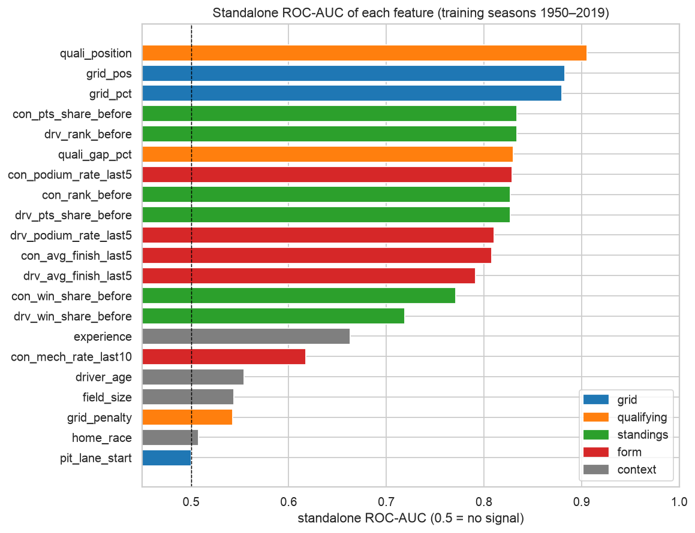
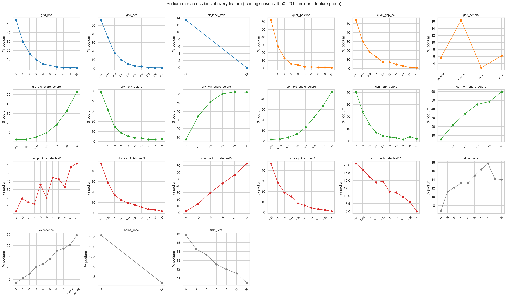
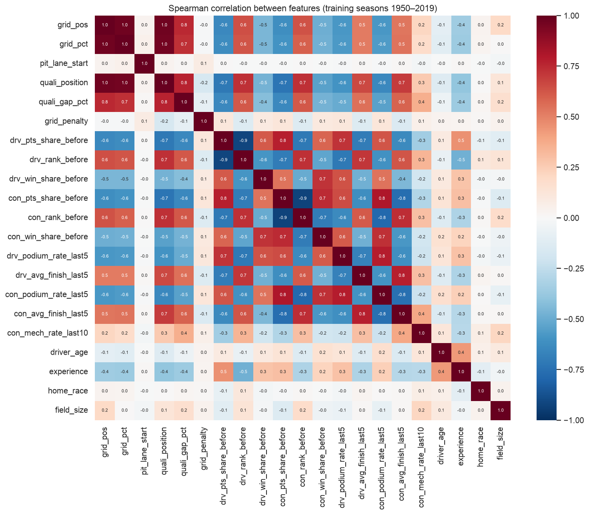
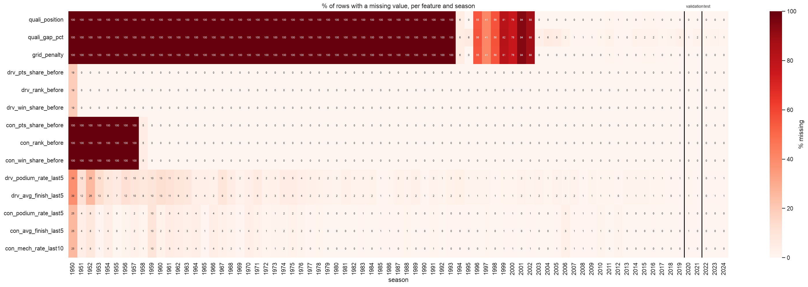
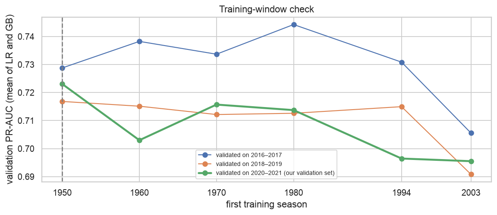
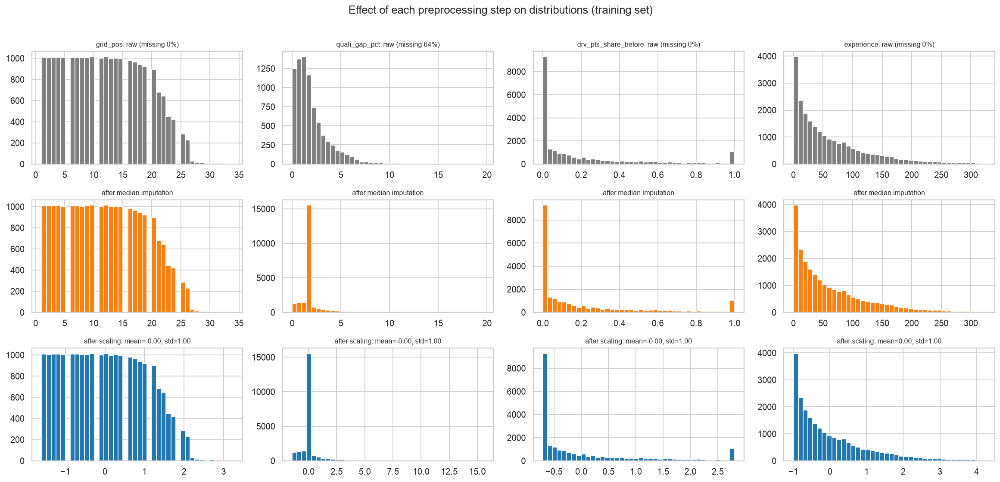
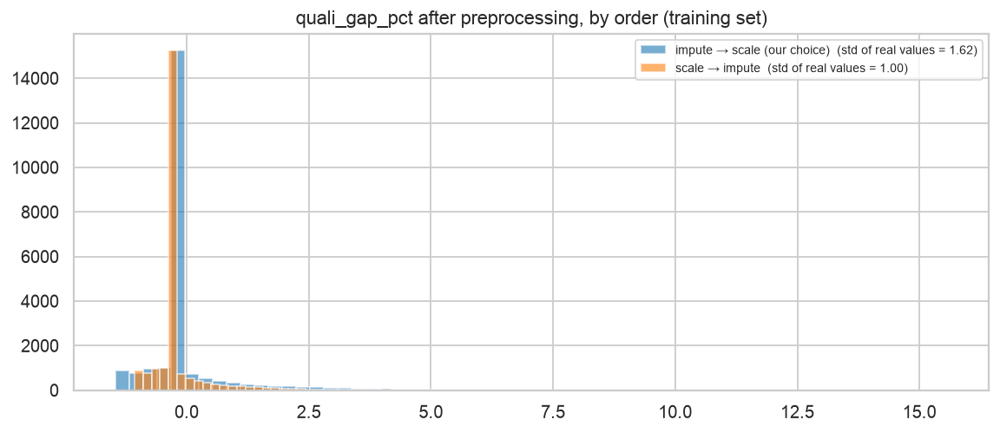

grid_pos 0.883 and grid_pct 0.880 on all training rows. quali_position reaches 0.905, but only on the 37% of rows that have qualifying (1994 on). On the same rows grid and qualifying are practically identical (0.904 vs 0.905): this is why the seasons without qualifying can still be used (D17). Both are kept because they differ exactly in the penalty cases Q1 showed matter.quali_gap_pct 0.830; win shares 0.72–0.77; experience 0.663; con_mech_rate_last10 0.618; driver_age 0.555; grid_penalty 0.543 (it works together with qualifying position, Q1).pit_lane_start 0.501, home_race 0.508, field_size 0.544. These three are not model inputs (D30). Section 4.6 adds each one back and checks that it never helps significantly.


Split by season, not by random rows (D18). A random split would put rows of the same race into both training and test, and rows from 2023 into training while testing on 2022. That is information from the future. A season split copies real use: predict the next race from past races. It also tests the 2022 rule change (ground-effect cars).
| split | seasons | races | rows | podium rate |
|---|---|---|---|---|
| train | 1950–2019 | 1,007 | 22,576 | 13.4% |
| validation | 2020–2021 | 39 | 780 | 15.0% |
| test | 2022–2024 | 68 | 1,359 | 15.0% |
Table 3.2 The split and the class balance per split. An assertion checks that no race is in two splits.

Training window 1950–2019 (D17). Leaving seasons out throws data away, so it needs evidence that a shorter window predicts better. We trained from six start years (1950, 1960, 1970, 1980, 1994, 2003), always up to 2019, and scored each on 2020–2021, compared with 1950 by the paired race bootstrap:
Missing qualifying does not stop the old seasons from being used: grid carries the same signal (Section 3.3), and missing values are filled and flagged (Section 3.5).
grid_penalty 0, driver podium rate 0, average finish 0.51, team mechanical rate 0.25.StandardScaler; trees do not need it.
quali_gap_pct (64% missing in training); the indicator columns tell the model which values in the spike were really missing. Scaling changes position and spread, not shape.Experiments E1–E3 change only the order of two steps, with the same model, rows and threshold rule. They are decided by correctness, not by score: a wrong order can score as high, or higher, precisely because it uses information it should not have.
| experiment | order | val PR-AUC | val ROC-AUC | val log-loss | test PR-AUC |
|---|---|---|---|---|---|
| E1 · split vs fit first (LR) | split → fit on train (kept) | 0.7226 | 0.9324 | 0.2245 | 0.7219 |
| fit on all data → split (leaky) | 0.7230 | 0.9326 | 0.2245 | 0.7219 | |
| E2 · impute vs scale first | LR: impute → scale (kept) | 0.7226 | 0.9324 | 0.2245 | 0.7219 |
| LR: scale → impute | 0.7214 | 0.9319 | 0.2250 | 0.7223 | |
| NN: impute → scale (kept) | 0.7158 | 0.9290 | 0.2274 | 0.7112 | |
| NN: scale → impute | 0.7227 | 0.9279 | 0.2289 | 0.7034 | |
| E3 · derive vs impute first (LR) | derive → impute (kept) | 0.7226 | 0.9324 | 0.2245 | 0.7219 |
| impute → derive | 0.7208 | 0.9296 | 0.2268 | 0.7192 |
Table 3.3 Preprocessing-order experiments (validation chooses; test for reference only).
experience median moves 41 → 45 and the Q1-gap median 1.50 → 1.34. The correct order costs nothing, so it is kept.quali_position before computing grid_penalty invents a penalty for all 14,228 training rows without qualifying data, and is worse on validation PR-AUC, ROC-AUC and log-loss. A feature value must be real or marked as missing, so derived features are computed first and imputed afterwards.
quali_gap_pct after preprocessing in the two E2 orders (training set).| missing-qualifying option | LR | GB default |
|---|---|---|
| median + missing indicator (kept) | 0.7226 | 0.7235 |
| median, no indicator | 0.7103 (−0.023 to −0.003)* | 0.7017 (−0.048 to +0.010) |
| grid fallback (quali position = grid slot) + indicator | 0.7154 (−0.014 to −0.001)* | 0.6633 (−0.087 to −0.013)* |
Table 3.4 Experiment E4, validation PR-AUC (95% interval of the change against our choice; * = excludes 0).
The median value itself is only a placeholder: the indicator tells the model the value was invented, so the model treats those rows as a group that relies on the grid. Without the indicator the logistic regression loses significantly. Filling qualifying with the grid slot is worse for both models (gradient boosting −0.06): it makes qualifying identical to the grid and erases the penalty signal Q1 found. Median + indicator is kept.